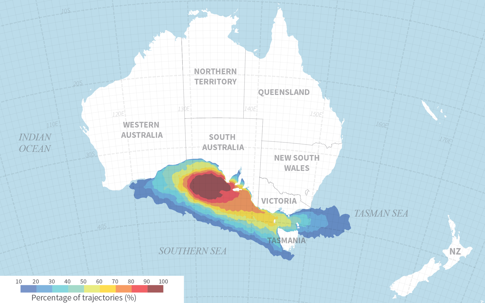
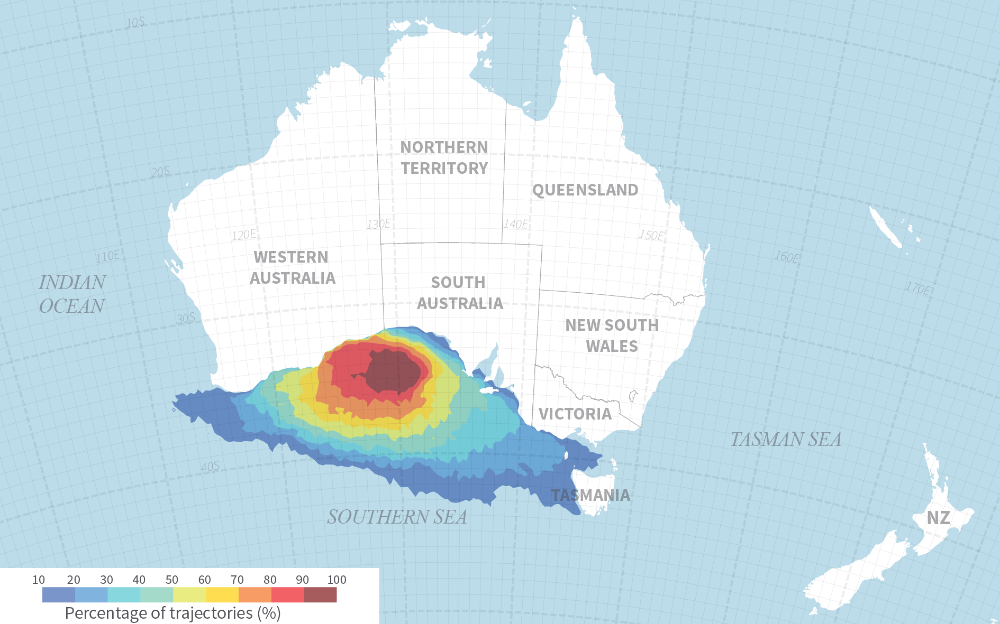

Environmental Impact Assessment
Australia
Stochastic analysis of oil spill trajectories in the Great Australian Bight
The Great Australian Bight to the south of Australia has been targeted by the oil industry as a new opportunity for the potential discovery of fossil fuels. The Wilderness Society has expressed serious concerns regarding likely impacts on the environmental values of the marine ecosystems in the Great Australian Bight and over the oil spill response capabilities in a region where the oil industry is not established nor has significant support resources available locally.
The Modelling House led an independent study that investigated the potential environmental and socio-economic impacts of an oil spill in the Great Australian Bight caused by a blowout of an oil drilling rig. A stochastic analysis of oil spill trajectory was proposed for this study. By analysing the progress of a large number of simulations, the potential severity of environmental impacts resulting from an oil spill can be assessed. The numerical model predicted that in the short term, in the event of a blowout in the Great Australian Bight, crude oil lost in the marine environment is likely to impact the shores of Western Australia should the event occur in summer whereas it would most likely reach the Eyre Peninsula and Spencer Gulf in South Australia if the incident would happen during winter. In the long term, the numerical model predicted that remaining weathered droplets of oil at the sea surface would progressively leave the Great Australian Bight and transit towards the Tasman Sea through Bass Strait and around Tasmania.
→ Full Report - Stochastic analysis of deep sea oil spill trajectories in the Great Australian Bight
→ The Guardian - BP oil spill in Great Australian Bight would be catastrophic, modelling shows.
Habitat of iconic marine species in the Great Australian Bight.
Socio-economic impact analysis - Winter Season.
Socio-economic impact analysis - Summer Season.